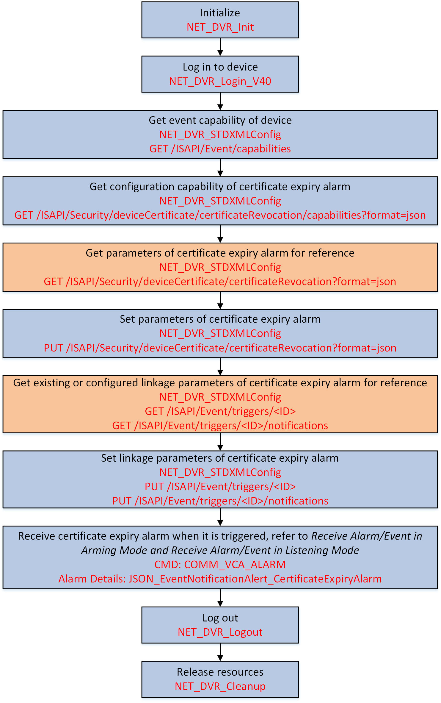

Generally, the device certificate is only valid in a specific period of
time. You can configure the certificate expiry alarm to remind the user a few days in
advance. When the certificate is expired, the alarm will be triggered and uploaded
automatically.

Figure 1 Programming Flow of Configuring Certificate Expiry Alarm
-
Call NET_DVR_STDXMLConfig to pass through the request URL: GET
/ISAPI/Event/capabilities to get the event capability of the device and
check whether the device supports certificate expiry alarm.
The event capability of the device is returned in the message
XML_EventCap by the output parameter lpOutputParam. If the
certificate expiry alarm is supported, the node <isSupportCertificateRevocation> will be returned and its
value is "true", then you can perform the following steps. Otherwise, please
end this task.
-
Call NET_DVR_STDXMLConfig to pass through the request URL: GET
/ISAPI/Security/deviceCertificate/certificateRevocation/capabilities?format=json to get the configuration capability of
certificate expiry alarm and know the supported parameters that can be
configured.
- Optional:
Call NET_DVR_STDXMLConfig to pass through the request URL: GET
/ISAPI/Security/deviceCertificate/certificateRevocation?format=json to get the existing or configured parameters of certificate expiry alarm for
reference.
-
Call NET_DVR_STDXMLConfig to pass through the request URL: PUT
/ISAPI/Security/deviceCertificate/certificateRevocation?format=json and set lpInBuffer of lpInputParam
to the message JSON_CertificateRevocation for setting parameters of certificate expiry
alarm.
- Optional:
Call NET_DVR_STDXMLConfig to pass through the request URL: GET
/ISAPI/Event/triggers/<eventType>-<channelID> or /ISAPI/Event/triggers/<eventType>-<channelID>/notifications to get the existing or configured linkage parameters of certificate expiry
alarm for reference.
Note:
The <ID> in the
request URL refers to the channel No., and it should be set to the
format "certificateRevocation-<channelID>".
-
Call NET_DVR_STDXMLConfig to pass through the request URL: PUT
/ISAPI/Event/triggers/<eventType>-<channelID> or /ISAPI/Event/triggers/<eventType>-<channelID>/notifications and set lpInBuffer of lpInputParam
to the message XML_EventTrigger or XML_EventTriggerNotificationList for setting the linkage parameters of certificate expiry alarm.
Note:
The <ID> in the
request URL refers to the channel No., and it should be set to the
format "certificateRevocation-<channelID>".
- Optional:
Set lCommand of alarm/event callback function
MSGCallBack to "COMM_VCA_ALARM" (command No.: 0x4993) for
receiving certificate expiry alarm in arming mode (refer to Receive Alarm/Event in Arming Mode for details) or listening mode (refer to Receive Alarm/Event in Listening Mode for details).
Call NET_DVR_Logout and NET_DVR_Cleanup to log out of the device and release the
resources.